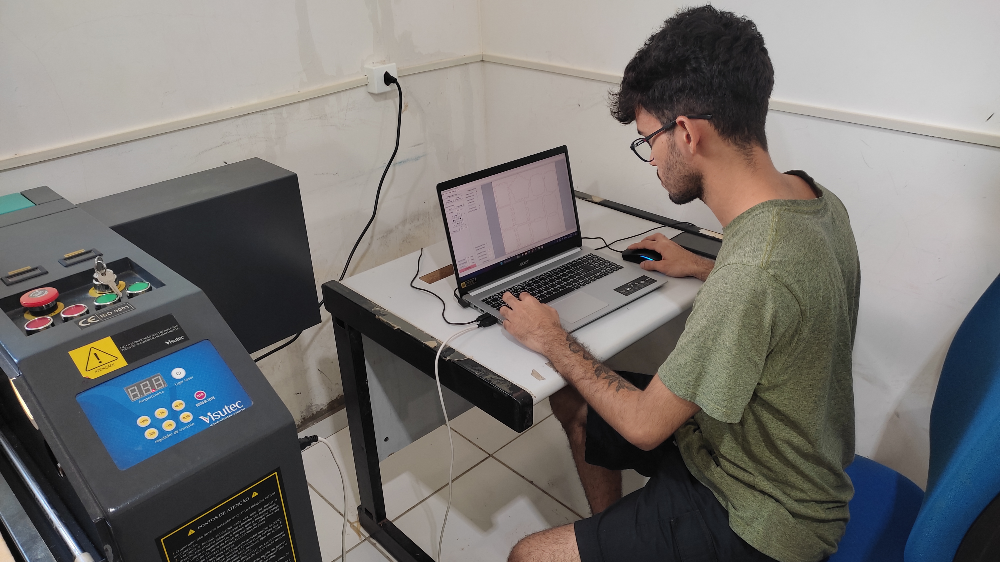
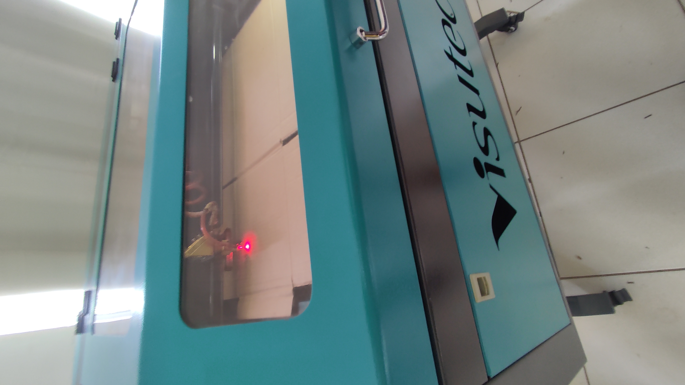
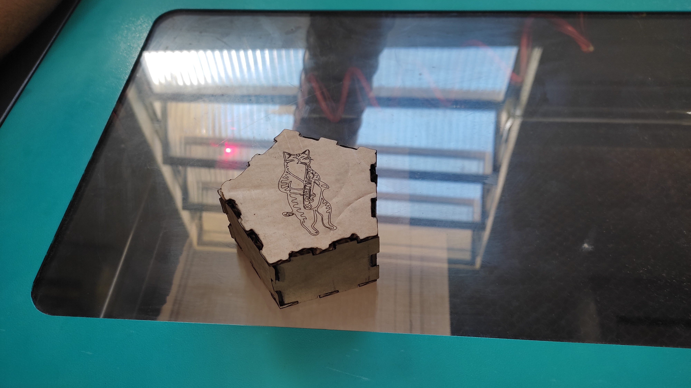

Chapter 4 Máquina a Laser
4.1 O Que é uma Máquina a Laser
A máquina a laser é uma tecnologia inovadora que utiliza um feixe de laser concentrado para cortar, gravar ou marcar materiais com alta precisão. As máquinas a laser são amplamente utilizadas em diversas indústrias devido à sua capacidade de realizar cortes complexos e detalhados, além de gravações precisas em uma variedade de materiais. Esta tecnologia tem aplicações em setores como a manufatura, a arquitetura, o design de produtos, a moda, e a joalheria, entre outros. A versatilidade e a precisão das máquinas a laser as tornam ferramentas indispensáveis em muitos processos de fabricação.
As máquinas a laser começaram a ganhar popularidade na indústria a partir da década de 1970, impulsionadas pela necessidade de métodos mais precisos e eficientes de corte e gravação. Desde então, elas evoluíram significativamente, tornando-se mais acessíveis e eficientes, permitindo sua utilização em pequenas empresas e até mesmo em ambientes domésticos.
4.2 Como Funciona a Máquina a Laser
4.2.1 Estrutura e Componentes
As máquinas a laser operam através da emissão de um feixe de laser concentrado que é direcionado para a superfície do material a ser trabalhado. Os componentes principais de uma máquina a laser incluem a fonte de laser, os eixos de movimentação, os espelhos, a lente focalizadora e o sistema de controle.
4.2.1.1 Fonte de Laser
A fonte de laser é o componente que gera o feixe de luz. Existem diferentes tipos de fontes de laser, incluindo laser CO2, laser de fibra e laser de diodo, cada uma adequada para diferentes tipos de materiais e aplicações. O laser CO2 é comumente usado para cortar e gravar materiais como madeira, acrílico, papel e couro.
4.2.1.2 Eixos de Movimentação
Assim como nas impressoras 3D, as máquinas a laser possuem eixos de movimentação que direcionam o feixe de laser para a localização correta no material. Os eixos X e Y controlam o movimento horizontal e vertical, enquanto o eixo Z pode ajustar a altura do feixe para focar em diferentes espessuras de material.
4.2.1.3 Espelhos e Lente Focalizadora
Os espelhos direcionam o feixe de laser da fonte até a lente focalizadora. A lente focalizadora concentra o feixe de laser em um ponto pequeno e preciso na superfície do material, permitindo cortes e gravações detalhadas.
4.2.1.4 Sistema de Controle
O sistema de controle é responsável por interpretar o design digital e controlar o movimento dos eixos, a intensidade do laser e a posição do feixe. O software de controle permite importar arquivos de design e ajustar os parâmetros de corte e gravação conforme necessário.
4.3 Experiência Prática: Projeto da Caixa
Durante o treinamento prático com a máquina a laser, desenvolvi um projeto que envolveu a criação de uma caixa utilizando o site MakerCase. Abaixo, descrevo detalhadamente cada etapa do processo.
4.3.1 Buscando o Projeto
O primeiro passo foi buscar um projeto de caixa no site MakerCase. Esta plataforma permite criar projetos personalizados de caixas ajustando dimensões, espessura do material e outros parâmetros. O site gera automaticamente o arquivo SVG necessário para a máquina a laser.
4.3.2 Preparação do Arquivo
Após ajustar as dimensões e características da caixa no MakerCase, baixei o arquivo SVG gerado pelo site e o importei para o software de controle da máquina a laser. No software, configurei diversos parâmetros essenciais para o corte, incluindo a região de trabalho e a velocidade de corte. Estes ajustes são cruciais para garantir que o material seja cortado de forma precisa e eficiente.
4.3.3 Processo de Corte
Primeiramente, ajustei a potência do laser para trabalhar com papelão, que é um material relativamente leve e fácil de cortar. Os valores de potência e velocidade necessários para diferentes materiais são frequentemente apresentados em uma tabela ao lado da máquina, fornecendo uma referência útil para diferentes tipos de trabalho.
Além desses parâmetros, um aspecto crítico do processo é a distância ótima entre o material e o laser. Para ajustar corretamente essa distância, utilizei um gabarito, uma ferramenta indispensável para garantir a precisão do foco do laser. Conforme explicado pelo professor, o feixe de laser não é uma linha reta e tende a se dispersar. Portanto, encontrar a distância correta é fundamental para obter cortes limpos e precisos.
A máquina possui controles específicos para ajustar esses parâmetros. Há botões dedicados para subir e descer o cabeçote do laser, permitindo um ajuste fino da altura. A potência do laser pode ser monitorada e ajustada através de um display digital na própria máquina, que exibe claramente os níveis de potência atuais. Essas funcionalidades são essenciais para garantir que o laser esteja operando nas condições ideais para o material em uso.
Ao configurar a região de trabalho, precisei definir os limites da área onde o laser operaria, garantindo que o corte fosse realizado exatamente nas posições desejadas. A velocidade de corte também foi ajustada, equilibrando a rapidez do processo com a precisão necessária para o papelão, que, embora fácil de cortar, ainda requer atenção para evitar queimar ou danificar o material.
Esses ajustes são fundamentais para otimizar o desempenho da máquina a laser e garantir a qualidade do corte. Uma vez que todos os parâmetros estavam devidamente configurados, iniciei o processo de corte. A máquina a laser começou a operar, movendo o feixe de laser conforme as instruções do arquivo SVG, cortando as peças da caixa com precisão milimétrica.
Durante o corte, monitorei continuamente o progresso e fiz ajustes finos conforme necessário. A observação constante é importante para garantir que o laser esteja cortando corretamente e que não haja problemas, como falhas no corte ou desalinhos. Qualquer desvio pode ser corrigido rapidamente, ajustando a altura do laser ou a potência conforme necessário. 4.3.4 Montagem da Caixa
Após o corte, todas as peças da caixa estavam prontas para montagem. As peças cortadas com precisão se encaixavam perfeitamente, facilitando a montagem sem a necessidade de adesivos ou parafusos. A experiência de ver o projeto digital se transformar em um objeto físico foi extremamente gratificante.
4.3.5 Resultado Final
O resultado final foi uma caixa bem construída, com cortes limpos e com . A utilização da máquina a laser permitiu criar um objeto funcional e esteticamente agradável de forma rápida e eficiente. Abaixo, uma foto do resultado final.
4.3.6 Reflexão Sobre o Processo
A experiência de ver o projeto digital se transformar em peças físicas foi extremamente satisfatória. Cada peça cortada saiu conforme o planejado, com bordas limpas e precisão nas dimensões, facilitando a montagem posterior. Essa fase do processo destaca a importância do planejamento e da configuração precisa, demonstrando como cada detalhe contribui para o sucesso do projeto final.
A máquina a laser é uma tecnologia poderosa que oferece inúmeras possibilidades de criação e inovação. Desde a concepção do projeto até a finalização do corte, cada etapa do processo proporciona uma oportunidade única de aprendizado e desenvolvimento. A realização do projeto da caixa foi uma demonstração prática de como a teoria e a prática se complementam no campo da fabricação digital.